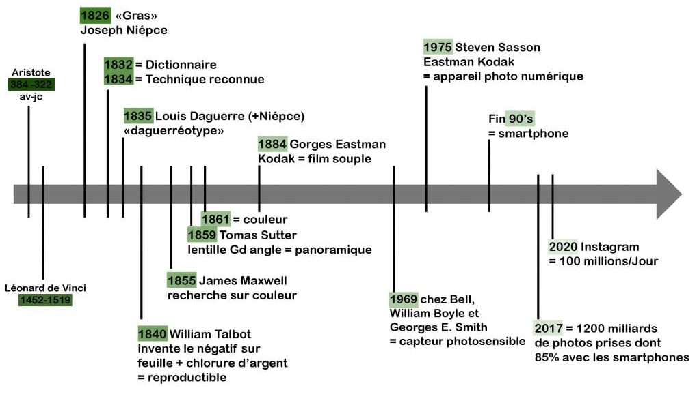

Historique de la photographie numérique
La photographie numérique est le fruit d’une évolution technologique progressive qui a profondément transformé la manière de produire et de diffuser les images. Née des avancées en électronique et en informatique au cours de la seconde moitié du XXe siècle, elle s’est développée grâce à l’amélioration des capteurs et des systèmes de stockage. Depuis les premiers prototypes expérimentaux jusqu’à sa démocratisation dans les années 1990, la photographie numérique a connu une expansion rapide. Aujourd’hui, elle s’impose comme un outil incontournable, accessible à tous, et intimement lié aux usages modernes de communication et de partage visuel.
Évolution de la photographie : de 1826 à l’ère du numérique
- 1826 — Nicéphore Niépce réalise la première photographie permanente (Point de vue du Gras).
- 1839 — Louis Daguerre présente le daguerréotype, premier procédé photographique commercialisé.
- 1841 — William Henry Fox Talbot invente le calotype, introduisant le principe du négatif/positif.
- 1888 — Kodak lance le premier appareil photo grand public (« You press the button, we do the rest »).
- 1900 —Lancement du Brownie par Kodak, rendant la photographie accessible à tous.
- 1935 — Apparition de la pellicule couleur Kodachrome, une révolution dans la photographie..
- 1969 — Invention du capteur CCD, base technologique de la photographie numérique..
- 1975 — Steven Sasson crée le premier appareil photo numérique chez Kodak.
- 1990 — Commercialisation des premiers appareils photo numériques pour le grand public, comme le Dycam Model 1.
- 1991 — Kodak lance le premier reflex numérique professionnel (DCS 100).
- Années 2000 — Généralisation de la photographie numérique et déclin progressif de l’argentique.
- 2007 — Lancement de l’iPhone par Apple, démocratisant la photographie mobile.
- Années 2010 à aujourd’hui — Essor de la photographie numérique via les smartphones et les réseaux sociaux comme Instagram, avec l’intégration de technologies avancées (IA, HDR, etc.).

Le premier appareil photo numérique ne produisait pas d’images colorées : il fallait colorier à la main les photos en noir et blanc après leur impression. Et encore plus fou : la NASA a utilisé des prototypes de capteurs numériques dès les années 1960 pour explorer l’espace, bien avant que les smartphones n’existent !
Les acteurs majeurs et l’évolution de la photographie
Inventeurs et pionniers
- Nicéphore Niépce — Réalise la première photographie permanente en 1826.
- Louis Daguerre — Introduit le daguerréotype, premier procédé commercial.
- George Eastman — Il a rendu la photographie accessible au grand public grâce à ses appareils simples et à la pellicule en rouleau.
- Steven Sasson — Conçoit le premier appareil photo numérique en 1975.
Entreprises et marques clés
- Kodak — Leader historique, inventeur du DCS 100 et de la pellicule couleur Kodachrome.
- Canon et Nikon — Fabricants majeurs d’appareils numériques pour professionnels et amateurs.
Photo numérique et photo argenté
| Critère | Photo argentique | Photo numérique |
|---|---|---|
| Support | Pellicule (film chimique) | Capteur électronique (CMOS/CCD) |
| Coût initial | Appareil souvent moins cher | Appareil parfois plus cher |
| Coût à l’usage | Élevé (film + développement) | Faible (stockage réutilisable) |
| Nombre de photos | Limité (24 ou 36 poses) | Quasi illimité |
| Visualisation | Pas immédiate | Immédiate (écran) |
| Qualité d’image | Grain naturel, rendu artistique | Image nette, parfois plus lisse |
| ISO | Fixe (selon la pellicule) | Variable |
| Retouche | Limitée | Facile avec logiciels |
| Archivage | Négatifs physiques | Fichiers numériques |
| Style | Authentique, nostalgique | Polyvalent |
Vidéo explicative
Voici ci-dessous une vidéo nous renseignant sur l'histoire de la photographie numerique